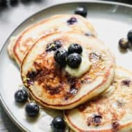

Lemon Blueberry Pancakes

Description
The finished product: Deliciously fluffy and tangy pancakes with bursts of
sweet blueberries. Perfect for a sunny breakfast!
Ingredients
- 1 1/2 cups all-purpose flour
- 3 1/2 teaspoons baking powder
- 1 teaspoon salt
- 1 tablespoon white sugar
- 1 1/4 cups milk
- 1 egg
- 3 tablespoons melted butter
- Zest of 1 lemon
- 1 tablespoon lemon juice
- 1 cup fresh blueberries
- Extra butter and maple syrup for serving
Steps
-
In a large bowl, sift together the flour, baking powder, salt, and sugar. In
a separate bowl, beat together the milk, egg, and melted butter. Stir in the
lemon zest and lemon juice.
-
Make a well in the center of the dry ingredients and pour in the wet
ingredients. Stir just until combined. The batter will be slightly lumpy.
Gently fold in the blueberries.
-
Heat a lightly oiled griddle or frying pan over medium-high heat. Pour or
scoop the batter onto the griddle, using approximately 1/4 cup for each
pancake. Cook until pancakes are golden brown on both sides.
- Serve hot with butter and maple syrup.